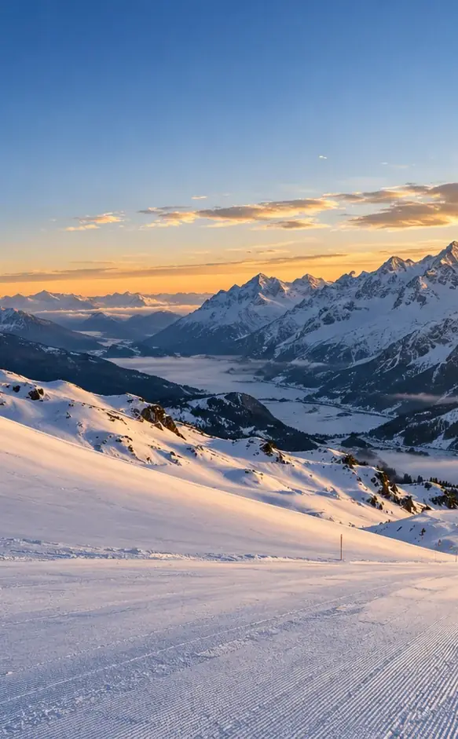

Ton ski du jour, enregistré tout seul et rejoué en 3D.
Replay 3D de chaque descente, ta vitesse tracée sur la montagne, alerte de chute. SnowLine note tout toute seule, pendant que ton iPhone reste dans ta poche.
Télécharger sur l'App StoreChaque journée, anneau par anneau.
En haut de l'écran, un anneau par jour. Touches-en un et tu ouvres le résumé de cette journée : distance, dénivelé, temps de descente et chutes, puis tes stats, ta meilleure descente et la liste de toutes tes descentes. Un bouton ouvre les graphiques de la journée.
Revis chaque descente sur le vrai relief.
Une caméra te suit dans la montagne avec ta vitesse en direct. Pose une maquette 3D de ta descente sur la table et fais-la tourner du bout du doigt.
Relief réel, trace du bleu au rouge selon la vitesse. Vues Poursuite, Amont et Haute, plus le mode Cinéma.
Ta vitesse, tracée sur la montagne.
Du bleu au rouge, virage après virage, sur une carte de relief d'hiver avec les pistes et remontées de la station et leurs noms.
Et pendant la descente
Le film, 51 secondes

Tes données
Tes données restent à toi. Pas de compte SnowLine. Tes traces et tes données de santé restent sur ton iPhone. Si tu crées un groupe, seuls ta vitesse max, ton dénivelé et ton nombre de descentes sont partagés, via iCloud.
Apple Santé. Tes journées de ski enregistrées comme séances, sans doublon avec ton Apple Watch.
Bulletins officiels. Le risque d'avalanche vient uniquement des bulletins officiels, relayés tels quels.
Qui fait SnowLine
Installe-la avant le 30 janvier 2027. Premium t'est offert pendant trois saisons.
Merci d'être là dès le début. Toutes les fonctions Premium, actuelles et à venir, sont offertes aux skieurs qui installent SnowLine avant cette date, jusqu'à la fin de la saison 2028-29. Rien à faire : l'app le détecte seule.
- Installer avant le
- 30 janvier 2027
- Premium offert jusqu'au
- 30 juin 2029